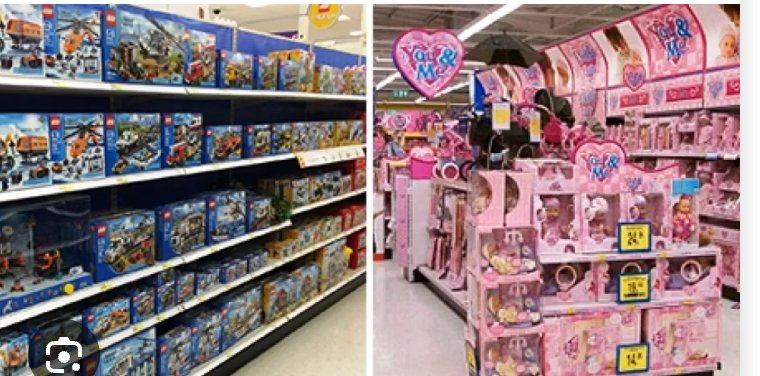
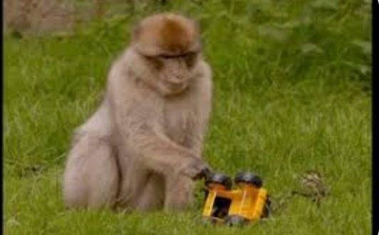

Monkey Toy Preferences
Sex differences （性别差异） are the ways that males and females differ that are caused directly by sex, and include both physical （生理） and behavioural differences （行为差异）.
There are differences in male and female brains, and in their hormones （激素）, that impact on human behaviour. For example, in our discussion of the brain for the key study by Hölzel et al., we will describe how language functions are localised （局部化） to areas in the left hemisphere. This is the case for men and women, although in women language functions are relatively more bilateral （双侧的）, i.e. spread over both sides of the brain. This is one of several known biological differences between male and female brains.
There are several differences in hormones too. The most obvious is that, post puberty, males have about ten times more testosterone （睾酮） than females, and females have much more oestrogen （雌激素） than males.
However, it is difficult to determine the extent to which some behavioural differences between males and females are the product of biological differences （生物差异） due to their sex, or social differences （社会差异） in their experiences due to the different ways in which society treats males and females. Many factors are involved in the way a child experiences the social world and these add together to create the process of socialisation （社会化）.
Socialisation （社会化）: the process of learning to behave in socially acceptable ways. This may differ somewhat for the two genders and in different cultures.
Differences in behaviours between men and women are traditionally believed to be rooted in socialisation. Boys watch, copy and are rewarded for behaving like men: being tough, active and oriented towards doing things. Girls, in contrast, are rewarded for watching and copying the behaviour of women, so tend to become more passive and caring. So, the socialisation process is, at least partly, determined by gender. This cultural bias, or gender stereotype （性别刻板印象）, is based on a culturally determined, oversimplified belief that all members of one gender share the same characteristics and that these are different from the other gender.
Toys can therefore be described as 'masculine' （男性化的） or 'feminine' （女性化的） according to gender stereotypes.
Gender stereotype （性别刻板印象）: a bias exhibited in society, which may be held by people and represented, for example, in books or toys that assign particular traits, behaviours, emotions, occupations, etc. to males and females.
Play （玩耍）: behaviour typical of childhood, that appears to be done for fun rather than any useful purpose. It may be solitary or social and may or may not involve interaction with an object. Objects designed for the purpose of play are called 'toys'.
One behaviour in which differences can be seen between males and females is in play （玩耍）. We often see boys engaging in active, sometimes aggressive, play with guns, toy tractors and building sets. Girls, however, are more usually seen engaging in nurturing play （养育性游戏） with dolls, playhouses and kitchen sets, i.e. being more passive and caring.
In terms of socialisation, this isn't surprising, as girls and boys are encouraged to play with gender-stereotyped toys （性别刻板印象玩具）, that is, toys that fit society's view of gender-appropriate behaviour (Figure 2.6). This influence has long been assumed to be the primary cause of gender differences in play.

Humans are complicated. Our brains are highly complex in structure and function and our behaviour is affected by our social and physical environments as well as our biology. This complexity makes humans difficult to study, as so many factors could be affecting any one outcome. In some research, the complexity of the human experience can be simplified by excluding many variables, for example in a laboratory experiment （实验室实验） where the effect of a single independent variable （自变量） can be studied by controlling other, potentially confounding variables （混淆变量）, and by having a control condition （控制条件） from which the independent variable is absent.
It is nevertheless sometimes impossible to conduct such studies because isolation of variables cannot ethically, or practically, be done. One such instance is in the case of children's development.
Hassett et al. described an important finding that prenatal hormonal exposure （产前激素暴露） of human infants (the hormones they are exposed to during gestation) affects toy preferences in children. Some girls have a genetic condition （遗传疾病） that causes increased androgens （雄激素） (male hormones) during foetal development. Such girls preferred to play with traditionally 'boys' toys than their unaffected sisters or control females. This was the case even when they receive increased socialisation to encourage 'female-appropriate' activities. Opportunities to study these hormonal differences in children are rare and the validity of the findings will be limited by uncontrolled variables such as the exact amount of hormonal exposure and the extent of gender-related socialisation.
It would be unethical to deliberately expose developing human foetuses or children to hormones, or to remove key factors from a child's environment to control their experience. However, a model for such research exists. A model is nothing more than a representation （表征/模型） of a phenomenon, often on a smaller or simpler scale. In the case of human development, a simpler model is needed, and one that offers the opportunity to control experiences. Higher primates, closely related to humans genetically, and with some very similar behaviours, can provide such a model.
Social activities such as 'rough-and-tumble', peer preferences and interest in infants differ between the genders. These activities are seen not only in children but also in other primates, who show gender differences which match those of children with, for example, males engaging in more rough-and-tumble play and less interest in infants than females. By looking at primate models of human behaviour it may be possible to see whether gender differences in behaviour could be caused by biological （生物） rather than social differences （社会差异）. Young primates, like young humans, have different levels of hormones according to their sex. Prepubescent males have more testosterone, a hormone associated not only with strength and aggressive behaviour but also, at least in humans, being associated with spatial skills. Young females have more oestrogen than males, and this hormone is associated in adult females with nurturing behaviours such as caring for offspring.
The aim （目的） of the study was to investigate whether toy preferences in monkeys resemble those in children, in order to test whether sex differences （性别差异） in toy choice is biologically determined by sex （由生物性别决定）.
This was a field experiment （现场实验） as the environment in which the participants were tested was their normal, outdoor housing area and they were free to interact with the toys or not.
Although the toys were new to them, they would not have been unfamiliar with objects being placed in their enclosures. The experimental design （实验设计） was independent measures （独立测量设计） as the independent variable was gender （性别）; each animal being recorded was either male or female.
Observations （观察法） were used as a technique to measure the dependent variable （因变量） of activities with the toys. As well as looking for differences between the genders, a correlation （相关分析） was also conducted on the results, to look for a relationship between individual monkeys' ranks within the social hierarchy （社会等级） and the frequency or duration of activities with each toy type. Finally, data from the monkeys was compared to similar data relating to children obtained from a different study. This was an independent measures comparison （独立测量比较）.
The participants were 21 male and 61 female rhesus monkeys （21只雄性和61只雌性恒河猴） living in natal groups （出生群体） as part of a wider group of 135 animals at the Yerkes primate research station （耶基斯灵长类研究中心） in the USA.
Of these 135 animals:
Each natal group was housed in a 25 × 25 metre outdoor area with access to a temperature-controlled indoor environment. They had water available, were given a standard monkey feed twice a day and additional fruit and vegetables once daily.
To reflect differences in activity preferences in sexually differentiated behaviours, the toys chosen were divided into two categories by their properties as objects rather than gender-typing, although the outcome of this categorisation was comparable to the traditional 'boys' toys', 'girls' toys' divide. The category of 'wheeled toys' （轮式玩具） matched vehicle toys, typically for boys, and 'plush toys' （毛绒玩具） matched typical girls' toys. 'Plush' toys are soft, cuddly ones.
There were:
Apart from size, the toys also varied in terms of shape and colour.
For each social group, seven trials （7次试验）, each lasting 25 minutes, were observed using two video cameras. Each trial began with all the monkeys in the group indoors while one plush toy and one wheeled toy were placed 10 metres apart in the outdoor enclosure. One video recorder was directed towards each toy and the plush and wheeled toys were counterbalanced （平衡/轮换） between left and right locations on each trial. After each trial the toys were removed and the video tape was analysed by two observers working together to achieve a consensus. They identified each animal interacting with a toy and coded specific activities directed towards the toys using a behavioural checklist （行为清单） (see Table 2.3). The exact time at which each activity occurred was also recorded so, in addition to the frequency of each behaviour, a record of the duration of continuous activities was kept.

Issues and Debates: Use of Animals in Psychological Research
Rhesus monkeys are a highly intelligent, social species, so their needs in terms of housing and protection from pain and distress are great. However, those same characteristics, of intelligence and sociability, make them excellent models for human behaviour. There is therefore a balance between the potential benefits of conducting valid research on a species closely related to ourselves and the costs to the individual animals involved in the research.
| Behaviour | Description of Behaviour |
|---|---|
| Extended touch | Placing a hand or foot on toy |
| Hold | Stationary support with one or more limbs |
| Sit on | Seated on the toy or a part of the toy |
| Carry in hand | Moving with the toy in hand and off the ground |
| Carry in arm | Moving with the toy in arm and off the ground |
| Carry in mouth | Moving with the toy in mouth and off the ground |
| Drag | Moving the toy along the ground behind the animal |
| Manipulate part | Moving, twisting or turning a part |
| Turn entire toy | Shifting 3-D orientation of toy |
| Touch | Brief contact using hands or fingers |
| Sniff | Coming very close to the toy with the nose |
| Mouth | Brief oral contact – no biting or pulling |
| Destroy | Using mouth or hands to bite or tear toy |
| Jump away | Approach, then back away from toy with a jumping motion |
| Throw | Project into air with hands |
Research Methods Note: The descriptions of behaviours in Table 2.3 are examples of operational definitions （操作性定义）. They enabled the observers who were coding the video tapes to work together to achieve inter-coder reliability （编码者间信度） and would allow other researchers to replicate （重复验证） the study.
To analyse the data, the records for each behaviour for each animal were converted into an overall average frequency and duration for that individual. This was because each animal could have participated in a different number of activities in different trials. Not all individuals interacted with the toys and those with fewer than five total recorded behaviours were not used in the analysis (14 males and 3 females). The final number of individuals used in the analysis was 11 males and 23 females.
Comparisons were made between males and females and between each gender's preference for wheeled or plush toys. It was possible to make such comparisons on the basis of number of interactions (frequency （频率）) and how long time was spent interacting with the toy type (duration （时长）). The data in Table 2.4 is a summary of the results used in these comparisons.
| Toy type | Sex of monkey | Frequency | Duration (minutes) | ||
|---|---|---|---|---|---|
| Mean | Standard deviation | Mean | Standard deviation | ||
| Wheeled ('masculine' toy) | Male | 9.77 | 8.86 | 4.76 | 7.59 |
| Female | 6.96 | 4.92 | 1.27 | 2.2 | |
| Plush ('feminine' toy) | Male | 2.06 | 9.21 | 0.53 | 1.41 |
| Female | 7.97 | 10.48 | 1.49 | 3.81 | |
Statistical analyses comparing toy preferences within each sex, using frequency data, found that:
A comparison between the sexes, again using frequency data, also found that females interacted with plush toys more than males, but there was no sex difference for wheeled toys. In comparisons of the duration data, males interacted for a longer time in total with wheeled toys than with plush toys. However, the duration of time spent interacting with the different toy types did not differ for females, who played for a similar total length of time with wheeled and plush toys.
Even though the difference in play durations for the male monkeys was big enough to show a significant difference between time spent playing with wheeled and plush toys, no significant difference was found in a between-sex comparison. This means that there was no overall difference in the time that males and females spent with playing with the wheeled and plush toys.
Further comparisons were made to calculate 'magnitude of preference' （偏好幅度）, that is, how much males preferred the 'masculine' (wheeled) toy and how much females preferred the 'feminine' (plush) toy. For males, this was calculated by taking the difference 'total frequency of wheeled toy interaction − total frequency of plush toy interaction'. For females, the equation 'total frequency of plush toy interaction − total frequency of wheeled toy interaction' was used. The same type of comparison was also performed on the duration scores. Statistical analysis of these differences confirmed that:
The results of a comparison of toy preferences of individual male and female animals are shown in Table 2.5.
| Percentage of individuals preferring each toy type | Males | Females |
|---|---|---|
| Preference for wheeled toys | 73% | 39% |
| Preference for plush toys | 9% | 30% |
| No significant preference | 18% | 30% |
For males and females combined, rank and total frequency of interactions were positively correlated for the wheeled toy and for the plush toy. Using just the data for males, neither frequencies nor durations correlated with rank. For females, however, rank was positively correlated with frequency of interactions for the wheeled toy and for the plush toy, although rank only correlated with duration for the plush toy, not the wheeled toy. As this shows that rank may be related to toy interactions in females but not in males, it is unlikely that social rank is responsible for the sex differences in toy preference overall.
Furthermore, although the sample size was too small for a detailed analysis of the results by age, comparisons were possible between wider groups. A comparison between juvenile, subadult, adult and old animals did not differ in terms of frequency or duration for either toy type.
Hassett et al. compared the data for the frequencies of interactions by the monkeys with different toy types to data for the durations of similar behaviours in children. The data for children was taken from another study (Berenbaum and Hines, 1992). The comparison is shown in Figure 2.8, which illustrates that the patterns are very similar.
Both the rhesus monkeys and the human children showed gender differences, with males preferring masculine toys and females preferring feminine toys. In addition, for human children, as with rhesus monkeys, the preference was much more marked for males than for females.
The results show that, like boys, male monkeys have a strong preference for masculine-type toys, in this case ones with wheels. Female monkeys, like young girls, are more variable in their toy preferences. In addition, the extent to which individuals preferred masculine or feminine (in this case plush) toys differed between males and females, with male monkeys showing much stronger preferences for wheeled toys than female monkeys did for plush toys.
Hassett et al. argue that their findings support a biological explanation （生物学解释） for toy preferences. Specifically, they concluded that these preferences develop in the absence of socialisation （在没有社会化的情况下）. This is because in monkeys, unlike in humans, only hormonal differences not social ones can be responsible for the differences in development of males and females. Importantly, such biologically driven differences could interact with social pressures （社会压力） on children. Boys choosing girls' toys tend to receive more negative responses than girls choosing boys' toys. This would reinforce a pre-existing biological tendency for boys to be more masculine in their toy choices and for girls to remain more variable in their choices.
A key strength of this study was the use of animals to eliminate the effect of socialisation （消除社会化的影响）. This was taken further, to exclude confounding variables （混淆变量） that could affect social interactions, such as age and social rank. The age of individuals was known as the monkey group had been established for over 25 years. Social rank had been assessed though behavioural observations of who groomed whom, dominance behaviours and submissive behaviours. Analysis demonstrated that these social factors had little effect on the sex differences in toy preference.
The observation process was highly standardised （标准化）, for example with clear operational definitions （操作性定义） of behaviours to improve reliability. The trials were of a standard length of 25 minutes, however, one had to finish 7 minutes early as the plush toy was torn into pieces.
A weakness of the study was that there were some differences in the way that the monkeys and the children were compared. For example, the masculine and feminine toys offered to the monkeys were chosen for their object properties rather than because they were gender-stereotyped toys for children. The measures of 'masculine' and 'feminine' play were also different for the monkeys and the children. The children were assessed in a different study using different toys and only measuring duration of play （玩耍时长） not frequency. Furthermore, the most significant comparison was between frequency for the monkeys and duration for the children, rather than duration for both.
The study used to provide data about children tested each participant individually. In contrast, this study observed the monkeys in groups （群体）. This methodological difference may have been important. Alexander and Hines (2002) studied the interactions of vervet monkeys with toys and found the same pattern of gender difference in that a greater proportion of males' toy interactions were with masculine toys and a greater proportion of females' toy interactions were with feminine toys. However, in contrast to both children and Hassett et al.'s rhesus monkeys, the vervet males interacted for a similar amount of time with masculine and feminine toys, unlike females, who were more gender-specific in their duration of play, spending more time with feminine toys. Rather than being a genuine species difference, this pattern could have been explained by the way toys were presented to the vervet monkeys — one at a time rather than together — thus, they were not given a genuine 'choice'. Similarly, testing monkeys in groups and children alone could have influenced the findings in Hassett et al.'s study.
Has the study by Hassett et al. overlooked the possibility that early socialisation in primates may influence the gendered development of play behaviours? This would suggest there may be a 'nurture' explanation, even in animals. However, Hassett et al. report a study by Alexander and Hines (2002) on vervet monkeys, which found that unlike human boys, male vervets play as much with masculine as with feminine toys. In contrast to human girls, who spend very similar amounts of time with 'masculine' and 'feminine' toys, the female vervets played for significantly longer with feminine than with masculine toys. Although this may superficially look as though it supports a nature view, it would require that female vervet monkeys are more strongly socialised to prefer female toys than human girls are. This seems unlikely, so overall findings from animal studies support the idea that gender differences in toys preferences are the result of nature （性别差异是天生的）.
Research with non-human animals is typically controlled by laws, and psychological institutions offer guidelines for their use. This study was conducted following appropriate ethical guidelines （伦理准则） for the care of animals in the USA and was approved by Emory University （埃默里大学）'s ethical committee on animal care and use. In terms of feeding, the animals received regular and appropriate food (twice daily monkey feed plus daily fruit and vegetables) and had constant access to water. They were ethically housed in family groups, in large enclosures, with access to both a temperature-controlled indoor area and an outdoor area. The observation using cameras would not have been distressing and the level of interactions with the toys suggests that their novelty was not in general a source of psychological distress or physical pain. However, one toy was destroyed but it is unknown whether this was a playful act or a reflection of distress.
Hassett et al.'s study investigated whether rhesus monkeys show a similar pattern of sex differences in toy preferences to children. In studies where the participants are children, it is difficult to separate any biological causation from social effects. In monkeys, however, the role of hormonal influences on toy preferences （激素对玩具偏好的影响）, without the effect of socialisation, would be clear. Videoed observations of groups of monkeys given a masculine (wheeled) toy and a feminine (plush) toy were analysed using a behavioural checklist of interactions. They found that male monkeys, like boys, prefer masculine toys and female monkeys, like girls, have less fixed preferences in their toy choices. This evidence supports a biological explanation for toy preference because the monkeys' preferences must have developed without the effect of socialisation to which children are normally exposed.
| Term | Definition |
|---|---|
| Sex differences （性别差异） | Differences between males and females caused directly by sex, including physical and behavioural differences |
| Hormones （激素） | Chemicals in the body that affect behaviour and development, e.g. testosterone and oestrogen |
| Testosterone （睾酮） | Male hormone associated with strength, aggression and spatial skills |
| Oestrogen （雌激素） | Female hormone associated with nurturing behaviours |
| Socialisation （社会化） | The process of learning to behave in socially acceptable ways |
| Gender stereotype （性别刻板印象） | A culturally determined, oversimplified belief about characteristics of males and females |
| Play （玩耍） | Behaviour typical of childhood, done for fun rather than useful purpose |
| Masculine toys （男性化玩具） | Toys traditionally associated with boys, e.g. wheeled toys |
| Feminine toys （女性化玩具） | Toys traditionally associated with girls, e.g. plush toys |
| Prenatal hormonal exposure （产前激素暴露） | Hormones a foetus is exposed to during gestation |
| Androgens （雄激素） | Male hormones, e.g. testosterone |
| Biological explanation （生物学解释） | Explaining behaviour in terms of biological factors such as hormones and genetics |
| Independent measures design （独立测量设计） | Different participants in each condition of an experiment |
| Dependent variable （因变量） | What is measured in an experiment |
| Independent variable （自变量） | What is manipulated in an experiment |
| Confounding variables （混淆变量） | Variables other than the IV that could affect the DV |
| Operational definitions （操作性定义） | Clear, precise definitions of behaviours or variables that can be measured |
| Inter-coder reliability （编码者间信度） | The degree of agreement between different observers coding the same behaviour |
| Magnitude of preference （偏好幅度） | How much an individual prefers one option over another |
| Social hierarchy （社会等级） | The ranking of individuals within a social group |
| Standardised （标准化） | Carried out in the same way for all participants |
| Field experiment （现场实验） | An experiment conducted in the participants' natural environment |
| Nature versus nurture （先天与后天） | The debate about whether behaviour is caused by biological or environmental factors |